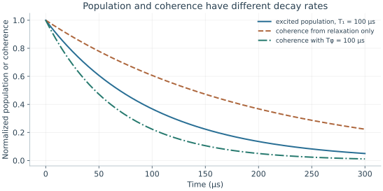
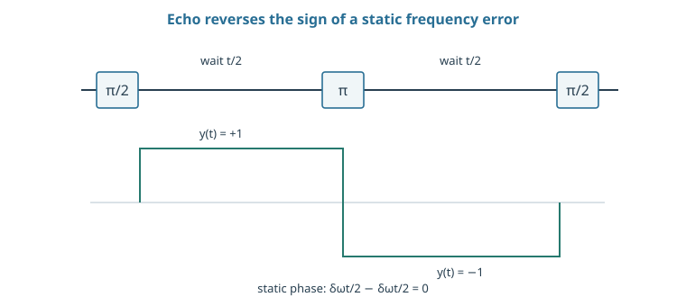

Starting point: Chapters 1–5; physical concepts and approximations are introduced as needed.
Anchor example: A decaying excited state and a Ramsey fringe.
This lesson includes explanations, worked examples, and problems with solutions. Advanced results whose proofs are outside the chapter are identified explicitly.
A qubit left alone does not stay put. Its excited population decays, and a superposition can lose its interference even when no energy is lost. We have already seen one way coherence can vanish while every population stays correct: an unmeasured mediator kept a record of which branch the data took. Is ordinary noise the same thing, with the qubit's surroundings playing the mediator?
We first ask where the lost information goes, which gives one physical mechanism behind both kinds of loss. Letting the qubit's energy pass into its surroundings gives the relaxation law and its effect on coherence, written as Kraus operators derived from a qubit–environment unitary. A warm environment adds upward transitions. Letting the surroundings shift the qubit's frequency at random gives dephasing, and asking whether that phase can be recovered gives the echo. Finally we ask what an error model must contain, beyond these two processes, to predict a measured probability.
Our first question is where the information goes when coherence is lost.
6.1 Relaxation
Both kinds of loss come from the qubit's contact with surroundings we do not measure. How does that contact remove coherence, and what law does energy loss follow? Treating the surroundings as an unmeasured mediator gives the mechanism. Energy loss then gives the relaxation time and a matching decay of coherence. A warm environment finally adds excitation as well as decay.
6.1.1 Energy loss and T1
Where does the information go? Recall the unmeasured mediator. When its final state depended on the data branch, the interference contrast fell by the overlap of the two mediator states. A qubit's surroundings act in the same way: the electromagnetic field, vibrations of the material, nearby defects. The difference is that we neither control nor measure them. We call them the environment.
The environment can keep two kinds of record. If the qubit's energy passes into it, the environment's state records that a decay happened. This is energy relaxation. If the environment only responds differently to \(\ket0\) and \(\ket1\), exchanging no energy, it records which state the qubit was in. This is pure dephasing: loss of phase without any change of population.
Consider relaxation first. Let the environment start in \(\ket{E_0}\), and suppose that over a time \(t\)
with \(\braket{E_0}{E_1}=0\). The excited state either survives, with amplitude \(\sqrt\eta\), or gives its energy to the environment, which then holds an excitation \(\ket{E_1}\). The two images are orthonormal, so this extends to a unitary. Under the constant-rate assumption we used to budget gate time, \(\eta=e^{-t/T_1}\), with decay rate \(\Gamma_1=1/T_1\).
What happens to a superposition \(a\ket0+b\ket1\)? It becomes \((a\ket0+b\sqrt\eta\ket1)\ket{E_0}+b\sqrt{1-\eta}\ket0\ket{E_1}\). The excited population is \(|b|^2\eta\). To find the coherence we need a description that allows mixtures, since the qubit alone is no longer in a pure state.
For a known pure state we write the outer product \(\rho=\ket\psi\bra\psi\). For a random preparation we average these outer products with their probabilities. The result is the density matrix. Its diagonal entries are populations, and its off-diagonal entries are the coherences that interference measurements see. When part of a joint state goes unmeasured, we project onto each orthonormal state of that part and add the resulting outer products. This operation is the partial trace.
Projecting onto \(\ket{E_0}\) leaves \(a\ket0+b\sqrt\eta\ket1\), and projecting onto \(\ket{E_1}\) leaves \(b\sqrt{1-\eta}\ket0\). So the qubit's density matrix after the wait is \(K_0\rho K_0^\dagger+K_1\rho K_1^\dagger\), with
Matrices that describe a process in this way are called Kraus operators. Their condition \(K_0^\dagger K_0+K_1^\dagger K_1=I\) keeps the total probability one. Here the sum multiplies the excited population by \(\eta\) and the off-diagonal entry by \(\sqrt\eta\), since only the \(\ket{E_0}\) parts pair up in \(\bra0\rho\ket1\). Population decays as \(e^{-t/T_1}\), but coherence decays as \(e^{-t/(2T_1)}\). So energy loss alone gives a coherence decay time \(2T_1\).
6.1.2 Thermal excitation
A cold environment only absorbs energy. What changes if it is warm enough to give energy back? Allow an upward rate \(\Gamma_\uparrow\) as well as a downward rate \(\Gamma_\downarrow\). The population then obeys \(\dot p_1=\Gamma_\uparrow(1-p_1)-\Gamma_\downarrow p_1\). Setting the derivative to zero gives the equilibrium \(p_{\rm eq}=\Gamma_\uparrow/(\Gamma_\uparrow+\Gamma_\downarrow)\). Subtracting this constant leaves an exponential:
So preparing both the ground and the excited state lets us estimate the common equilibrium and the total rate. A fit that forces the equilibrium to zero biases the inferred lifetime.
How are the two rates related? If the environment is itself in equilibrium at temperature \(T\), then \(p_{\rm eq}\) must equal the Boltzmann value \(1/(1+e^{\hbar\omega/(k_BT)})\). Equating the two expressions gives \(\Gamma_\uparrow/\Gamma_\downarrow=e^{-\hbar\omega/(k_BT)}\), a relation called detailed balance. Excitation by stray radiation from a hotter source need not obey it.

The relaxation-only coherence envelope is exp(−t/2T₁). Adding independent exponential pure dephasing at Tφ = 100 μs gives T₂ = 66.7 μs. These are model curves, not measured traces.
Problem 6.1. Can T2 exceed 2T1 in the stated exponential model?
Worked solution
No. The pure-dephasing rate is nonnegative. An apparent violation suggests inconsistent fits, definitions, or a model outside these assumptions.
6.2 Dephasing
Energy loss limits the coherence time to \(2T_1\), but coherence often decays faster. What else removes phase without moving population, and can that phase be recovered? A randomly shifting frequency gives each run a different phase, and averaging over runs lowers the contrast. If the shift changes slowly, reversing its effect halfway through a run recovers the phase.
6.2.1 Frequency noise and T2
Suppose the environment shifts the qubit frequency by a small amount \(\delta\omega(s)\) that differs from run to run. In one run the relative phase then gains \(\phi(t)=\int_0^t\delta\omega(s)\,ds\). Each run stays pure, but averaging runs multiplies the coherence by \(\langle e^{i\phi}\rangle\). We quote a standard probability result: for a zero-mean Gaussian phase of variance \(v\), this average is \(e^{-v/2}\). A spread of phases therefore lowers the interference contrast.
How does the variance grow with time? Suppose the noise is memoryless: its value in each short interval is independent of the past. Such noise is called Markovian. The phase is then a sum of independent increments, so its variance grows in proportion to \(t\). Writing \(v=2t/T_\phi\) gives the factor \(e^{-t/T_\phi}\), exponential pure dephasing with time constant \(T_\phi\). Combining it with the factor \(e^{-t/(2T_1)}\) from independent energy loss gives
\[\frac1{T_2}=\frac1{2T_1}+\frac1{T_\phi}.\]
For \(T_1=100\) μs and \(T_\phi=100\) μs, \(T_2=66.7\) μs.
What if the noise is slow instead? If the offset is nearly constant within a run but varies between runs with spread \(\sigma\), then \(\phi=\delta\omega\,t\) and \(v=\sigma^2t^2\). The envelope is the Gaussian \(e^{-\sigma^2t^2/2}\), not an exponential. The experiment that measures this free decay applies a π/2 pulse, waits, applies a second π/2 pulse, and measures. It is called a Ramsey experiment, and its fitted decay time is written \(T_2^*\). Because slow offsets give a Gaussian envelope, \(T_2^*\) need not be a single microscopic rate.
6.2.2 Echo and noise timescales
Can phase lost to a slow offset be recovered? If \(\delta\omega\) is constant during a run, free evolution gives the phase \(\delta\omega\,t\). Insert an X π pulse halfway through. Since \(XZX=-Z\), the pulse exchanges the roles of \(\ket0\) and \(\ket1\). Relative to the original labels, the second half then accumulates phase with the opposite sign, and the total is \(\delta\omega(t/2)-\delta\omega(t/2)=0\). In coordinates that flip with each π pulse, called a toggling frame, the frequency term simply changes sign at each pulse.
When does the cancellation fail? If the noise changes during the run, the two halves see different offsets. In general the phase is \(\int y(t)\,\delta\omega(t)\,dt\), where \(y\) switches between \(+1\) and \(-1\) at each π pulse. The pulse timing thus selects which noise timescales cancel and which survive. Echo cannot undo energy already passed to the environment, and imperfect π pulses add errors of their own.

The sign refers to the frequency term in a toggling frame. Echo refocuses a constant offset; it neither reverses relaxation nor cancels arbitrary rapidly varying noise.
Problem 6.2. Does echo reverse a spontaneous emission event?
Worked solution
No. Emission transfers energy and information to the environment. A mid-sequence π pulse does not recover the emitted quantum state.
6.3 Error Models
Relaxation and dephasing describe one qubit inside its two states. A complete error model must also say what happens outside those states and across several qubits, and it must predict something we can measure. Asking what leakage and shared events add shows what a list of random Pauli errors misses. Following one model all the way to a measured probability then shows how to separate its parts.
6.3.1 Leakage and correlated errors
Is every error a random X, Y, or Z applied by mistake? Such a Pauli error keeps the state inside the qubit's two-dimensional space, and leakage does not. A leaked level may respond differently to later gates and may persist until a dedicated removal step. A model built only from Pauli errors therefore misses this long-lived memory in the error process.
Correlations matter even for errors that stay inside the qubit. Independent flips on two qubits occur together with probability \(p^2\). A shared event that flips both with probability \(p\) has the same single-qubit flip probabilities but a much larger joint probability. Measurements on each qubit separately cannot tell these apart. Only simultaneous operations, with joint outcomes recorded, can.
6.3.2 From a model to a prediction
How does a noise model earn its use? By predicting a measurement. Start with \(\ket+\), wait a time \(t\), and measure X. Under the exponential relaxation and pure-dephasing model, \(\langle X\rangle=e^{-t/T_2}\), so \(P(+)=\tfrac12[1+e^{-t/T_2}]\). At \(t=T_2\) this is about 0.684, not the excited-state survival \(e^{-1}\).
With a detuning, the X expectation also contains a factor \(\cos(\Delta t)\), so the oscillation and its fading contrast have separate causes. The assignment relation then maps these probabilities to reported ones. Keeping the three steps separate lets an experiment distinguish a frequency error, a loss of coherence, and limited detector contrast. Fitting every reduced oscillation to “decoherence” would confuse all three.
Problem 6.3. After ten identical overrotations by ε, what coherent angle error remains?
Worked solution
10ε if the rotations share the same axis and no other action changes the accumulation. A probability estimate requires applying that rotation to the specified input.
Each parameter in these models, from \(T_1\) and \(T_2\) to the detuning and the assignment errors, must be inferred from experiments. Which experiments infer them, and what can they establish about the quality of a gate?
Worked model check. For T1=80 μs and pure-dephasing time 160 μs, predict the exponential T2 and the plus probability after waiting one T2 from an initial plus state.
Worked solution
\(1/T_2=1/160+1/160\) μs⁻¹, so \(T_2=80\) μs. The predicted X-plus probability is \((1+e^{-1})/2\simeq0.68394\), under the independent exponential model.
These exercises draw on the whole chapter. Attempt each question before opening a hint, explain your reasoning, then compare it with the worked solution.
A qubit has \(T_1=50\) μs and an independent pure-dephasing time \(T_\phi=200\) μs. Find \(T_2\) in the exponential model, and the coherence remaining after \(20\) μs.
Hint 1
\(1/T_2=1/(2T_1)+1/T_\phi\).
Hint 2
Coherence factor \(e^{-t/T_2}\).
Worked solution
\(1/T_2=1/100+1/200=3/200\ \mu\mathrm s^{-1}\), so \(T_2\approx66.7\) μs. After \(20\) μs the coherence factor is \(e^{-0.3}\approx0.74\). Relaxation alone would give \(T_2=100\) μs; the dephasing makes it shorter, and no process in this model can push it above \(2T_1\).
A qubit with \(\hbar\omega/k_BT=4.8\) relaxes downward at rate \(\Gamma_\downarrow=1/(50\ \mu\mathrm s)\) and obeys detailed balance. Find \(\Gamma_\uparrow\), the equilibrium population, and the observed relaxation rate toward equilibrium.
Hint 1
\(\Gamma_\uparrow=\Gamma_\downarrow e^{-4.8}\).
Hint 2
The approach rate is \(\Gamma_\uparrow+\Gamma_\downarrow\).
Worked solution
\(\Gamma_\uparrow=\Gamma_\downarrow e^{-4.8}\approx0.0082\,\Gamma_\downarrow\). The equilibrium population is \(\Gamma_\uparrow/(\Gamma_\uparrow+\Gamma_\downarrow)\approx0.0081\), and the approach to equilibrium has rate \(\Gamma_\uparrow+\Gamma_\downarrow\approx1.008\Gamma_\downarrow\), only \(0.8\%\) faster than \(\Gamma_\downarrow\) alone. The upward rate barely changes the measured lifetime but sets a floor on the ground-state preparation.
Shot-to-shot frequency noise gives a zero-mean Gaussian accumulated phase with variance \(v\). Find the Ramsey contrast for \(v=0.5\ \mathrm{rad}^2\) and \(v=2\ \mathrm{rad}^2\). Is any individual run decohered?
Hint 1
Contrast is \(e^{-v/2}\).
Hint 2
Each run has a definite (but unknown) phase.
Worked solution
\(e^{-0.25}\approx0.78\) and \(e^{-1}\approx0.37\). No individual run need be mixed: each acquires a definite but random phase, and the reduced contrast comes from averaging runs with different phases. That is why such dephasing can be partly undone by an echo, unlike energy loss to the environment.
In a Ramsey experiment with detuning \(\Delta/2\pi=100\) kHz and \(T_2=50\) μs, the probability of \(+\) is \(\frac12\big[1+e^{-t/T_2}\cos(\Delta t)\big]\). (a) Evaluate it at \(t=2.5\) μs and \(t=5\) μs. (b) A student fits the data at these two points with a decay alone, ignoring the cosine. What would they wrongly conclude? (c) How should the experiment be designed to separate frequency error from decoherence?
Hint 1
\(\Delta t=\pi/2\) at \(2.5\) μs and \(\pi\) at \(5\) μs.
Hint 2
\(e^{-0.1}\approx0.905\).
Worked solution
(a) At \(2.5\) μs, \(\cos(\pi/2)=0\), so \(P(+)=0.5\). At \(5\) μs, \(\cos\pi=-1\), so \(P(+)=\frac12(1-0.905)\approx0.048\). (b) A pure-decay fit would read \(P(+)=0.5\) as complete loss of coherence after \(2.5\) μs, a \(T_2\) twenty times too short, and could not explain \(P(+)<0.5\) at all. (c) Sample many delays to resolve the oscillation and fit frequency and envelope together, or deliberately detune by a known amount so that the fringe frequency and its decay are both measured.
A qubit’s frequency offset is constant during each run but varies from run to run with standard deviation \(\sigma_\omega/2\pi=10\) kHz (Gaussian). (a) Show that the Ramsey contrast is \(e^{-\sigma_\omega^2t^2/2}\), and find the time \(T_2^*\) at which it falls to \(e^{-1}\). (b) What does a Hahn echo do to this noise, and what limits the echo contrast?
Hint 1
The phase \(\delta\omega\,t\) has variance \(\sigma_\omega^2t^2\).
Hint 2
An echo refocuses an offset that is constant during the run.
Worked solution
(a) The phase is \(\delta\omega\,t\), Gaussian with variance \(v=\sigma_\omega^2t^2\), so the contrast is \(e^{-\sigma_\omega^2t^2/2}\), a Gaussian envelope. It reaches \(e^{-1}\) at \(T_2^*=\sqrt2/\sigma_\omega\approx\sqrt2/(2\pi\times10^4\ \mathrm{s^{-1}})\approx22.5\) μs. (b) An echo cancels a run-constant offset exactly, so this noise contributes nothing to the echo signal. The echo contrast is limited by relaxation (\(e^{-t/2T_1}\)), by noise that changes within a run, and by imperfect \(\pi\) pulses. Comparing Ramsey and echo separates slow from fast noise.
Two neighboring qubits each flip with probability \(p=0.01\) per cycle. (a) Compare the probability that both flip if the flips are independent and if they come from one shared event. (b) A three-qubit repetition code is built on qubits that flip together through a shared event with probability \(p\). What is the logical error per cycle, compared with \(3p^2\) for independent flips? (c) What measurement reveals the difference?
Hint 1
Shared event: all three flip together with probability \(p\).
Hint 2
Marginal flip probabilities are identical in both models.
Worked solution
(a) Independent: \(p^2=10^{-4}\). Shared: \(p=10^{-2}\), a hundred times larger. (b) If a shared event flips all three code qubits, majority decoding fails every time it happens: logical error \(p=10^{-2}\), compared with about \(3\times10^{-4}\) for independent flips. The code is useless against fully correlated noise. (c) Single-qubit error rates are the same in both models; only simultaneous measurements of several qubits, comparing joint flip rates with products of marginals, expose the correlation.
A qubit prepared in \(\ket1\) relaxes toward \(p_{\rm eq}=0.05\): \(p_1(t)=p_{\rm eq}+(1-p_{\rm eq})e^{-t/T_1}\). (a) Evaluate \(p_1\) at \(t=T_1\). (b) A fit that assumes \(p_{\rm eq}=0\) infers a lifetime from this point as \(-t/\ln p_1\). What lifetime does it report? (c) How do measurements starting from both \(\ket0\) and \(\ket1\) remove the bias?
Hint 1
\(p_1(T_1)=0.05+0.95e^{-1}\).
Hint 2
\(\ln0.399\approx-0.918\).
Worked solution
(a) \(p_1(T_1)=0.05+0.95\times0.368\approx0.399\). (b) \(-T_1/\ln0.399\approx1.09T_1\): the lifetime is overestimated by about \(9\%\), and the bias grows at later times, where the floor dominates. (c) Starting from \(\ket0\), the population rises toward the same \(p_{\rm eq}\) with the same rate. Fitting both curves together fixes the floor and the common rate, so neither is confused with the other.
A student models leakage as an extra depolarizing error with the same probability. Suppose a gate leaks with probability \(10^{-3}\), and a leaked qubit stays leaked for the next \(20\) gates, during which every gate involving it fails. Compare the number of failed gates caused by one leakage event with one Pauli error, and explain what the depolarizing model misses.
Hint 1
A Pauli error affects one gate; persistent leakage affects every later gate until removal.
Hint 2
Two-qubit gates also spread errors to partners.
Worked solution
A Pauli error is a single event: it corrupts one gate’s output, and later gates act normally. A leaked qubit corrupts all \(20\) subsequent gates that use it, and in two-qubit gates it can disturb its partners too. So one leakage event can cause twenty or more failures, while the depolarizing model counts one. The model misses memory: leakage persists until a dedicated removal step. Error rates must specify whether failures are independent per gate or can persist and spread.
Echo phase is \(\int y(t)\,\delta\omega(t)\,dt\), where \(y=\pm1\) switches sign at each \(\pi\) pulse. Consider a frequency offset drifting linearly during a run, \(\delta\omega(t)=\beta t\), over total time \(t_f\). (a) Show that a single echo (pulse at \(t_f/2\)) leaves phase \(-\beta t_f^2/4\). (b) Show that two pulses at \(t_f/4\) and \(3t_f/4\) cancel the linear drift. (c) What general principle about pulse sequences does this illustrate?
Hint 1
For one pulse, integrate \(\beta t\) from \(0\) to \(t_f/2\), then subtract from \(t_f/2\) to \(t_f\).
Hint 2
For two pulses, \(y=+1,-1,+1\) on the three intervals.
Worked solution
(a) \(\beta\big[\frac{t_f^2}{8}-\big(\frac{t_f^2}{2}-\frac{t_f^2}{8}\big)\big]=-\frac{\beta t_f^2}{4}\neq0\). (b) With \(y=+1\) on \([0,t_f/4]\), \(-1\) on \([t_f/4,3t_f/4]\), \(+1\) on \([3t_f/4,t_f]\): \(\frac\beta2\big[\frac{1}{16}-\frac{8}{16}+\frac{7}{16}\big]t_f^2=0\). (c) A sequence cancels noise components whose time dependence is orthogonal to its switching function \(y(t)\): one pulse removes constant offsets, two symmetric pulses also remove linear drifts. More pulses suppress progressively faster noise, at the cost of more pulse errors. This is the idea behind dynamical decoupling and noise spectroscopy.
A Ramsey contrast is measured at times \(t_1\) and \(2t_1\). Show that for an exponential envelope \(C(2t_1)=C(t_1)^2\), while for a Gaussian envelope \(C(2t_1)=C(t_1)^4\). If \(C(t_1)=0.8\) and \(C(2t_1)=0.42\), which model fits better, and what does that suggest about the noise?
For \(C=e^{-t/T}\), doubling \(t\) squares \(C\). For \(C=e^{-(t/T)^2}\), doubling \(t\) multiplies the exponent by four, raising \(C\) to the fourth power. The data give \(0.42\), close to \(0.8^4\approx0.41\) and far from \(0.8^2=0.64\): the decay is Gaussian. That points to slow, quasi-static frequency noise, which a Hahn echo should largely refocus, rather than fast Markovian dephasing, which an echo would not remove.